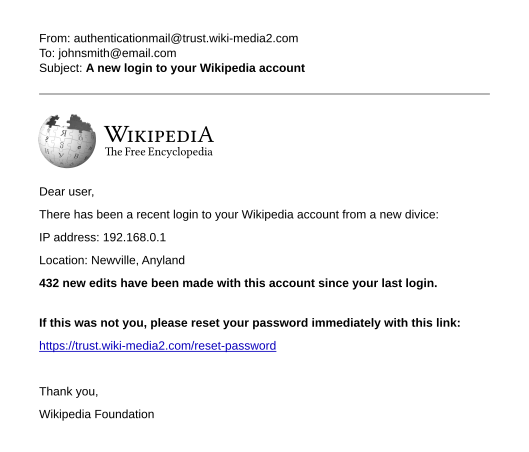
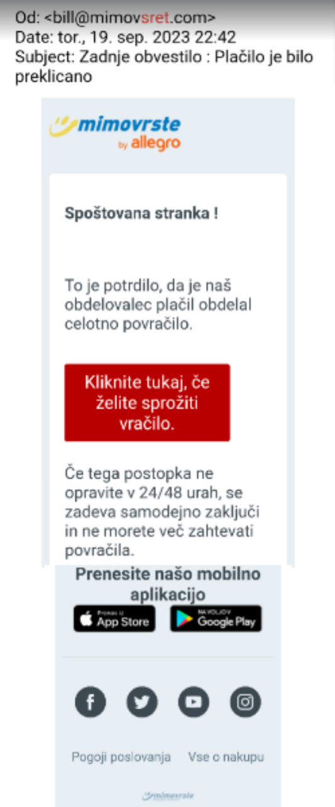
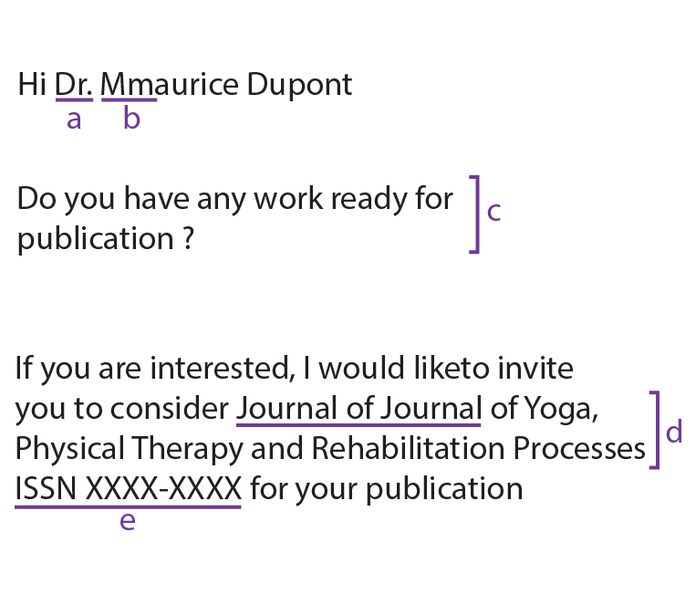
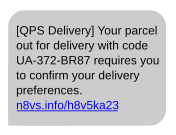

Online Safety & Privacy
In the NetworkChuck “Phishing Attacks Are SCARY Easy” video, what tool does he use to demonstrate how quickly a phishing page can be created?
In the NetworkChuck “Phishing Attacks Are SCARY Easy” video, what is the main takeaway about why phishing is so dangerous?
In the NetworkChuck “Email and SMS Phishing Attacks” video, which type of phishing does he describe as using text messages instead of email?
In the NetworkChuck “Email and SMS Phishing Attacks” video, what is one key red flag he highlights in a suspicious email?
In the CNN Business video, what two social media posts did Rachel Tobac use to begin her social engineering attack on the reporter?
In the CNN Business video, what personal information did Rachel Tobac manage to obtain just by calling businesses and pretending to be someone else?

Phishing is a type of cybercrime in which an attacker impersonates a trusted organisation — a bank, a social network, a delivery service — to trick you into handing over sensitive information such as passwords, credit card numbers, or personal details. The name is a play on “fishing”: attackers cast a lure and hope someone bites.
Phishing comes in several flavours. The most common is email phishing, where a mass-sent message pretends to be from a well-known brand. Smishing does the same thing through text messages (“SMS phishing”). Vishing uses phone calls. And website clones replicate the look of a real login page — pixel for pixel — so you enter your credentials without suspecting anything.
Spear phishing is a more targeted version: instead of sending the same email to millions, the attacker researches a specific victim and crafts a personalised message. When the target is a senior executive, this is called whaling.

Social engineering is a broader category that includes phishing. Instead of breaking through firewalls or cracking encryption, social engineers exploit the weakest link in any security system: people. They manipulate human psychology — trust, helpfulness, fear, curiosity — to get victims to do what the attacker wants.
The legendary hacker Kevin Mitnick once said that it was easier to trick someone into giving him a password than to spend the effort to hack into a system. His book, The Art of Deception, is filled with real-world examples of social engineering attacks that succeeded simply because someone on the phone was too polite to say “no.”
Common techniques include pretexting (inventing a believable story to gain trust), baiting (leaving an infected USB drive where someone will pick it up), and tailgating (following an authorised person through a locked door).

Most phishing attempts share a set of telltale warning signs. Learning to spot them is your best defence:
apple-supp0rt@random-domain.xyz.paypa1.com instead of paypal.com.
If an email, text, or phone call feels off, follow these steps:
reportphishing@apwg.org.Remember: legitimate organisations will never ask you to share your password via email or text. If in doubt, go directly to the official website by typing the URL into your browser instead of clicking any link.
What is the main difference between regular phishing and spear phishing?
Why do social engineers target humans rather than computer systems?
You receive an email saying “Your account will be suspended in 1 hour unless you click here!” Which red flag does this represent?
What should you do first if you suspect an email is a phishing attempt?
What is “smishing”?
Create an HTML/CSS/JS page that tests whether users can tell real messages from phishing scams:
apple-security@mail-verify.xyz (phishing — domain mismatch, urgency)auto-confirm@amazon.com for an item you actually bought (legit)noreply@github.com (legit)no-reply@accounts.google.com confirming a new sign-in you just made (legit)paypa1-support@secure-check.net asking you to confirm a transaction (phishing — misspelled name, wrong domain)Paste your HTML into the HTML panel, CSS into the CSS panel, and JS into the JavaScript panel. Click “Run” to see the result!